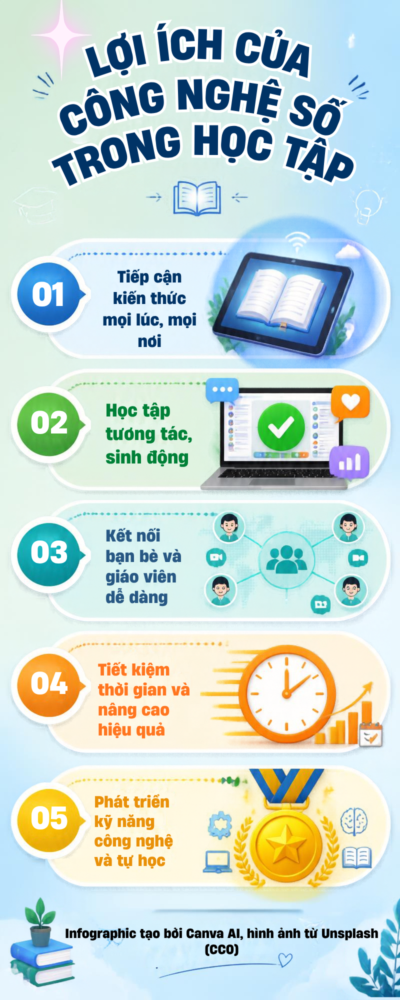

Mô tả tổng quan: Trang web hiển thị tổng hợp các sản phẩm truyền thông đa phương tiện được thiết kế nhằm tuyên truyền và nâng cao nhận thức về lợi ích của công nghệ số trong giáo dục.
Mô tả sản phẩm:Infographic tóm tắt 5 lợi ích cốt lõi của công nghệ số trong học tập bao gồm: (1) Tiếp cận kiến thức mọi lúc, mọi nơi; (2) Học tập tương tác, sinh động; (3) Kết nối bạn bè và giáo viên dễ dàng; (4) Tiết kiệm thời gian và nâng cao hiệu quả; (5) Phát triển kỹ năng công nghệ và tự học.

Mô tả sản phẩm:Video ngắn (30 giây) giới thiệu vai trò của công nghệ số trong việc thay đổi cách sống, học tập và làm việc; giúp kết nối thế giới, tìm kiếm tri thức dễ dàng, tối ưu hiệu suất làm việc và mở ra cơ hội phát triển tương lai.